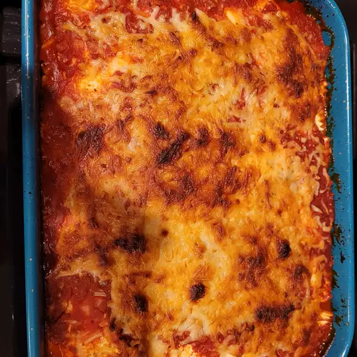

Back to home
Lasagna

Description
An easy delicious lasagna recipe for you to enjoy!
Ingredients
- 2 cups ricotta cheese
- 1 (10 ounce) package frozen chopped spinach - thawed, drained and squeezed dry
- 1 ½ cups grated Romano cheese
- 2 eggs
- salt and pepper to taste
- ¼ cup spaghetti sauce
- 1 (25 ounce) package frozen cheese ravioli
- ½ cup spaghetti sauce
- ½ cup grated Romano cheese
Steps
- Preheat an oven to 375 degrees F (190 degrees C). Spray an 8x8 inch baking dish with cooking spray and set aside.
- Mix the ricotta cheese, spinach, 1 1/2 cups Romano cheese, eggs, salt and pepper to taste in a bowl.
- To assemble the lasagna, spread 1/4 cup of spaghetti sauce in the bottom of the prepared baking dish, and place frozen raviolis on top in a single layer.
- Spread about 1 cup of the ricotta mixture over the raviolis. Repeat the layers 3 more times, ending with a layer of frozen raviolis.
- Spread with 1/2 cup spaghetti sauce, and sprinkle remaining 1/2 cup of Romano cheese on top. Cover the dish with aluminum foil.
- Bake in the preheated oven for 40 minutes, until the casserole is bubbling. Then remove the aluminum foil, and bake another 10 minutes to brown the cheese on top.
- Let sit for 10 minutes before serving.